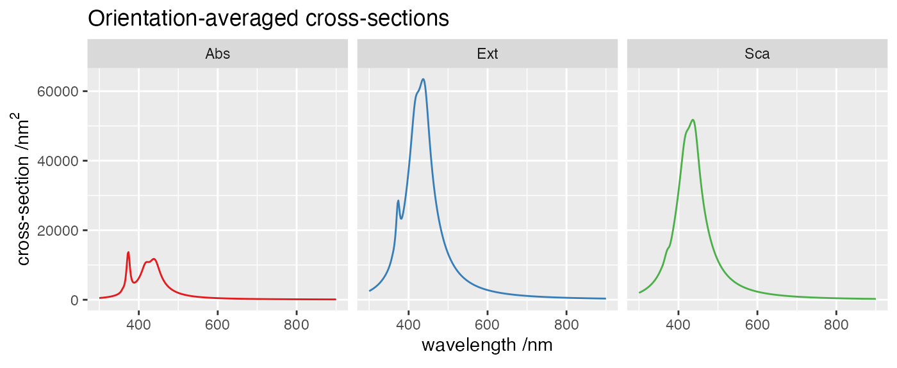
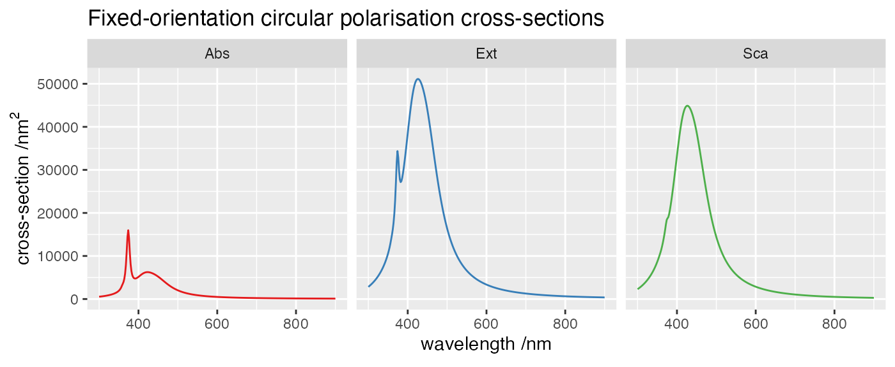

vignettes/01_dimer_spheres/01_dimer_spheres.Rmd
01_dimer_spheres.RmdThis example illustrates on a very simple case the calculation of far-field spectra for absorption, scattering, and extinction. The structure consists of two silver spheres in water, and all parameters are kept to their default values.
This simulation uses the following input file
Wavelength 300 900 300
Medium 1.7689 # epsilon of water
Scatterers 2
Ag 0.0 -50.0 0.0 30.0
Ag 0.0 50.0 0.0 30.0The command to run the example is simply
../../build/terms input > logThe full log contains basic details of the calculations, and finishes with the timing.
readInputFile> Parsing file input
readInputFile> Detected keyword Wavelength
Wavelength LB (nm): 300.000000
Wavelength UB (nm): 900.000000
nsteps, step: 300 2.0000
readInputFile> Detected keyword Medium
Constant host epsilon= 1.7689E+0
readInputFile> Detected keyword Scatterers
with nscat= 2
readInputFile> Descriptor(s) and circumscribing sphere(s):
scatID String x y z R_0
1 Ag 0.0000E+0 -5.0000E+1 0.0000E+0 3.0000E+1
2 Ag 0.0000E+0 5.0000E+1 0.0000E+0 3.0000E+1
readInputFile> Individual geometry characteristic(s):
scatID Details
1 Mie with ncoats= 0
2 Mie with ncoats= 0
readInputFile> Dielectric functions for (coated) Mie scatterer(s):
scatID volID Label
1 0 Ag
2 0 Ag
readInputFile> Finished parsing 3 keywords
spectrumFF> ===== Wavelength: 300.00 (nm) ======================
solve> Prestaging...
solve> Staging and solving/inverting...
solve> Done!
calcOAprops> <csExt>= 2.48657647E+03 nConv= 8
<csSca>= 1.98297386E+03 nConv= 8
<csAbs>= 5.03602604E+02
<cdExt>= -4.98793535E-13
<cdSca>= -2.19982655E-13
<cdAbs>= -2.78810880E-13
calcCs> csExt= 2.75907731E+03 nConv= 0
csSca= 2.16250260E+03 nConv= 8
csAbs= 5.96574715E+02
calcCs> csExt= 2.89262954E+03 nConv= 0
csSca= 2.40883355E+03 nConv= 8
csAbs= 4.83795996E+02
calcCs> csExt= 2.82585343E+03 nConv= 0
csSca= 2.28566807E+03 nConv= 8
csAbs= 5.40185355E+02
calcCs> csExt= 2.82585343E+03 nConv= 0
csSca= 2.28566807E+03 nConv= 8
csAbs= 5.40185355E+02
...
termsProgram> Program run time (CPU & real in s): 1.415E+01 7.557E+00The output consists of a number of files, storing the far-field cross-sections for each order from 1 to \(n_{1}\).
[1] "cdAbsOA.dat" "cdExtOA.dat"
[3] "cdScaOA.dat" "csAbs1X_scat001coat0.dat"
[5] "csAbs1X_scat002coat0.dat" "csAbs1X.dat"
[7] "csAbs2Y_scat001coat0.dat" "csAbs2Y_scat002coat0.dat"
[9] "csAbs2Y.dat" "csAbs3R_scat001coat0.dat"
[11] "csAbs3R_scat002coat0.dat" "csAbs3R.dat"
[13] "csAbs4L_scat001coat0.dat" "csAbs4L_scat002coat0.dat"
[15] "csAbs4L.dat" "csAbsOA.dat"
[17] "csExt1X.dat" "csExt2Y.dat"
[19] "csExt3R.dat" "csExt4L.dat"
[21] "csExtOA.dat" "csSca1X.dat"
[23] "csSca2Y.dat" "csSca3R.dat"
[25] "csSca4L.dat" "csScaOA.dat" csAbsOA.dat are shown below.
head csAbsOA.dat# Wavelength | Total | n= 1 | ...
300.000000 5.03602603744949647E+02 3.31261376352353409E+02 1.40150383065914411E+02 2.91720951695711079E+01 2.83312504366855444E+00 1.78212234756965099E-01 7.19892922602280785E-03 2.08456553501993084E-04 4.49290655666220471E-06
302.000000 5.22685636977923423E+02 3.44748521382053923E+02 1.44811457687040672E+02 3.00383695626867464E+01 2.89885252892007816E+00 1.80976730313776313E-01 7.24681749146867046E-03 2.07835321730690502E-04 4.43409486109945302E-06
304.000000 5.42816680345133591E+02 3.58914522985891608E+02 1.49764760134740243E+02 3.09739549735456094E+01 2.97172252017958050E+00 1.84193586799422326E-01 7.31393825564216268E-03 2.07815696647910259E-04 4.39002370703773788E-06
306.000000 5.64076433303224348E+02 3.73803537698749778E+02 1.55038231146349119E+02 3.19865823161027976E+01 3.05255496433436635E+00 1.87912006456199210E-01 7.40205770507339732E-03 2.08436956205719200E-04 4.67656990390098304E-06
308.000000 5.86554296776616411E+02 3.89463393621879732E+02 1.60663507702742208E+02 3.30851676943918989E+01 3.14230954193719558E+00 1.92190480838204919E-01 7.51333164740923716E-03 2.09749677141107794E-04 4.65350292400373416E-06
310.000000 6.10349679932135587E+02 4.05945987547256664E+02 1.66676566659501589E+02 3.42800444478820197E+01 3.24211553652504625E+00 1.97098879583437359E-01 7.65039502558012216E-03 2.11818255260690091E-04 4.64810573274870815E-06
312.000000 6.35573567341364196E+02 4.23307740879243283E+02 1.73118508510429876E+02 3.55832512813657189E+01 3.35330967064847041E+00 2.02721135065831309E-01 7.81647859383865877E-03 2.14724241000503746E-04 4.66177612159979428E-06
314.000000 6.62350420150793525E+02 4.41610127068233851E+02 1.80036518196980921E+02 3.70088928388524607E+01 3.47748448824769074E+00 2.09158728689936763E-01 8.01556261806256505E-03 2.18570796957994026E-04 4.69637278669797527E-06
316.000000 6.90820500283441106E+02 4.60920287212480162E+02 1.87485051357418683E+02 3.85735947571601088E+01 3.61655086187722485E+00 2.16535269678322151E-01 8.25258176121758565E-03 2.23488723765209317E-04 4.75434229311276841E-06The following files contain orientation-averaged cross-sections,
[1] "cdAbsOA.dat" "csAbsOA.dat" "cdExtOA.dat" "csExtOA.dat" "cdScaOA.dat"
[6] "csScaOA.dat"Rows: 8,127
Columns: 5
$ wavelength <dbl> 300, 300, 300, 300, 300, 300, 300, 300, 300, 302, 302, 302,…
$ crosstype <chr> "Abs", "Abs", "Abs", "Abs", "Abs", "Abs", "Abs", "Abs", "Ab…
$ variable <chr> "total", "I1", "I2", "I3", "I4", "I5", "I6", "I7", "I8", "t…
$ dichroism <dbl> -2.788109e-13, -7.023598e-13, -1.404720e-13, 5.232580e-13, …
$ average <dbl> 5.036026e+02, 3.312614e+02, 1.401504e+02, 2.917210e+01, 2.8…
Note that for this achiral dimer, there is no circular dichroism.
The following files contain fixed-orientation cross-sections for X and Y linear polarisations,
[1] "csAbs1X.dat" "csAbs2Y.dat" "csExt1X.dat" "csExt2Y.dat" "csSca1X.dat"
[6] "csSca2Y.dat"Rows: 8,127
Columns: 7
$ wavelength <dbl> 300, 300, 300, 300, 300, 300, 300, 300, 300, 302, 302, 3…
$ crosstype <chr> "Abs", "Abs", "Abs", "Abs", "Abs", "Abs", "Abs", "Abs", …
$ variable <chr> "total", "I1", "I2", "I3", "I4", "I5", "I6", "I7", "I8",…
$ polarisation1 <dbl> 596.574714643, -53.660165036, 547.831082887, 65.02418340…
$ polarisation2 <dbl> 4.837960e+02, 5.818915e+01, 4.955256e+01, 3.436971e+02, …
$ dichroism <dbl> 1.127787e+02, -1.118493e+02, 4.982785e+02, -2.786729e+02…
$ average <dbl> 540.185355185, 2.264491480, 298.691822973, 204.360654314…The following files contain fixed-orientation cross-sections for L and R circular polarisations,
[1] "csAbs3R.dat" "csAbs4L.dat" "csExt3R.dat" "csExt4L.dat" "csSca3R.dat"
[6] "csSca4L.dat"Rows: 8,127
Columns: 7
$ wavelength <dbl> 300, 300, 300, 300, 300, 300, 300, 300, 300, 302, 302, 3…
$ crosstype <chr> "Abs", "Abs", "Abs", "Abs", "Abs", "Abs", "Abs", "Abs", …
$ variable <chr> "total", "I1", "I2", "I3", "I4", "I5", "I6", "I7", "I8",…
$ polarisation1 <dbl> 540.185355185, 2.264491480, 298.691822973, 204.360654314…
$ polarisation2 <dbl> 540.185355185, 2.264491480, 298.691822973, 204.360654314…
$ dichroism <dbl> -9.890755e-12, 1.136868e-11, -1.699618e-11, -6.536993e-1…
$ average <dbl> 540.185355185, 2.264491480, 298.691822973, 204.360654314…
Note that for this configuration there is no circular dichroism, even with fixed incidence.
Last run: 23 February, 2022